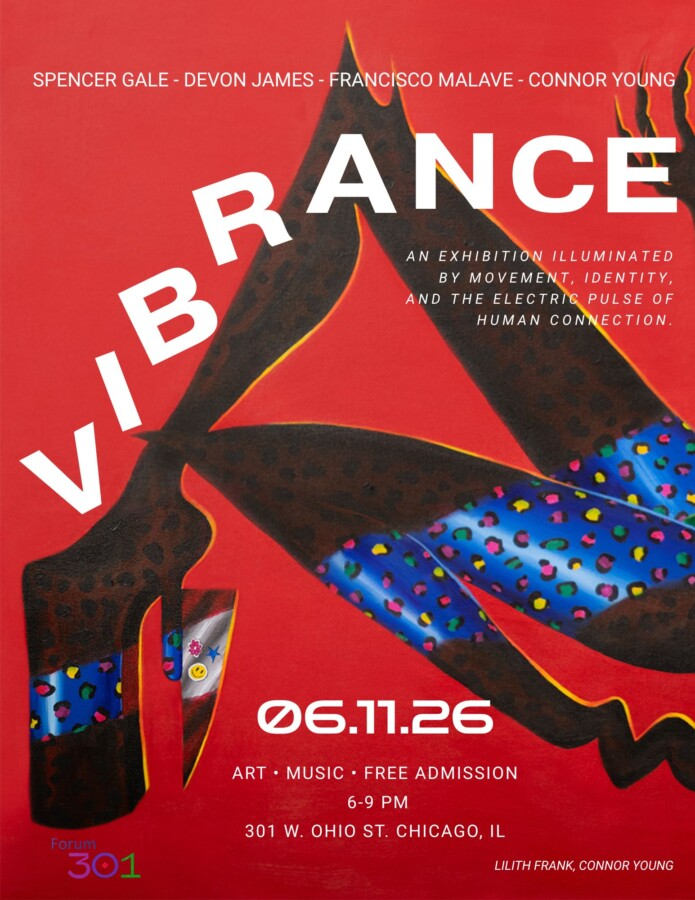

Vibrance
Vibrance is an exhibition illuminated by movement, identity, and the electric pulse of human connection. Featuring four Chicago based artists, photography, paintings, and neon glass sculptures transform the gallery into a living atmosphere, one saturated with color, rhythm, intimacy, and unapologetic presence. Presented during Pride Month, Vibrance serves as both celebration and declaration: an affirmation of life, visibility, and the triumphs continually forged through collective resilience and self-expression.
Artists: Spencer Gale • Devon James • Francisco Malave • Connor Young
Join the artists, performers, and community for the official after-hours celebration of Vibrance. A continuation of movement, connection, and unapologetic self-expression.
Featuring Drag Performances by Opal Minx and Eliel Brooklyn
Exhibition: 301 W. Ohio St. Chicago, IL
AFTERS: Stardust Lounge
Visit our website to RSVP for exhibition and purchase tickets for the afters